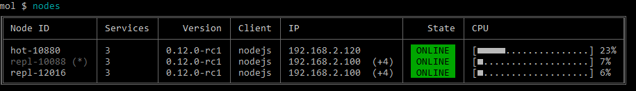
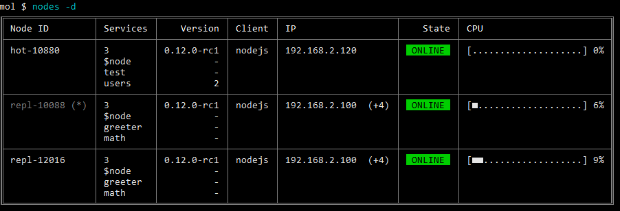
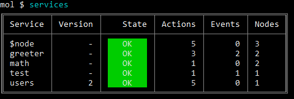
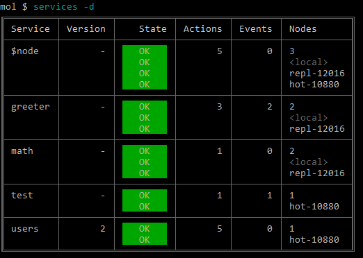
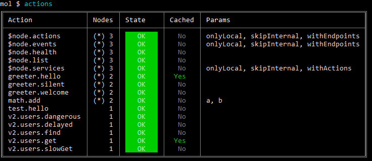
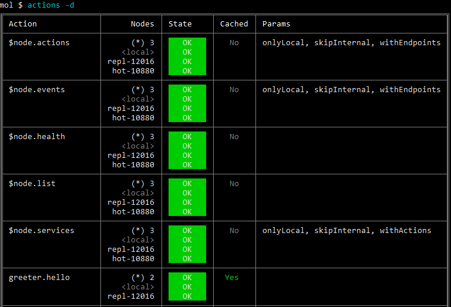
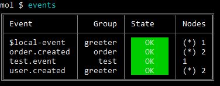
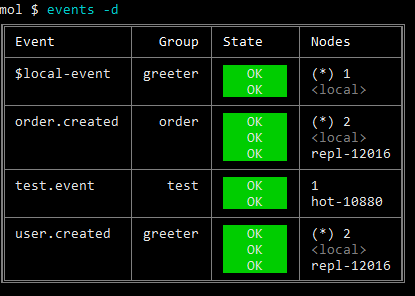
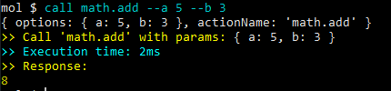
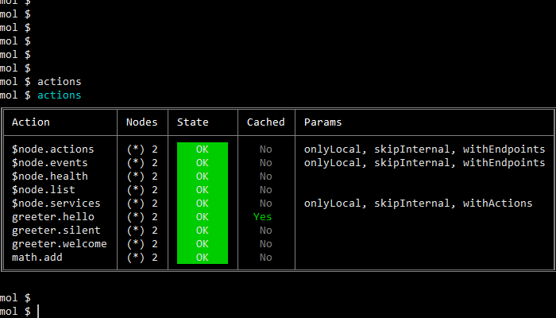

moleculer repl 
The moleculer-repl is an interactive developer console for Moleculer.
Install
npm i moleculer-repl |
Usage
Switch broker to REPL modeconst broker = new ServiceBroker();
// Switch to REPL mode
broker.repl();
REPL Commands
Commands: |
List nodes
mol $ nodes |
Options-a, --all list all (offline) nodes
-d, --details detailed list
-f, --filter <match> filter nodes (e.g.: 'node-*')
--raw print service registry to JSON
--save [filename] save service registry to a JSON file
Output

Detailed output

List services
mol $ services |
Options-a, --all list all (offline) services
-d, --details print endpoints
-f, --filter <match> filter services (e.g.: 'user*')
-i, --skipinternal skip internal services
-l, --local only local services
Output

Detailed output

List actions
mol $ actions |
Options-a, --all list all (offline) actions
-d, --details print endpoints
-f, --filter <match> filter actions (e.g.: 'users.*')
-i, --skipinternal skip internal actions
-l, --local only local actions
Output

Detailed output

List events
mol $ events |
Options-a, --all list all (offline) event listeners
-d, --details print endpoints
-f, --filter <match> filter event listeners (e.g.: 'user.*')
-i, --skipinternal skip internal event listeners
-l, --local only local event listeners
Output

Detailed output

Show common information
mol $ info |
Output
List environment variables
mol $ env |
Call an action
mol $ call "test.hello" |
Output

Options--help output usage information
--load [filename] Load params from file
--stream [filename] Send a file as stream
--save [filename] Save response to file
Call an action with parameters
mol $ call "math.add" --a 5 --b Bob --c --no-d --e.f "hello" |
Params will be { a: 5, b: 'Bob', c: true, d: false, e: { f: 'hello' } }
Call with JSON string parameter
mol $ call "math.add" '{"a": 5, "b": "Bob", "c": true, "d": false, "e": { "f": "hello" } }' |
Params will be { a: 5, b: 'Bob', c: true, d: false, e: { f: 'hello' } }
Call with parameters from file
mol $ call "math.add" --load |
It tries to load the <current_dir>/math.add.params.json file to params.
mol $ call "math.add" --load my-params.json |
It tries to load the my-params.jon file to params.
Call with file stream
mol $ call "math.add" --stream my-picture.jpg |
It loads the my-picture.png file and send to the math.add action as a Stream.
Call and save response to file
mol $ call "math.add" --save |
It saved the response to the <current_dir>/posts.find.response.json file. The extension is .json when the response is object. Otherwise it is .txt.
mol $ call "math.add" --save my-response.json |
It saved the response to the my-response.json file.
Direct call
Get health info from node-12 nodemol $ dcall "node-12" "$node.health"
Parameter passing is similar to
callcommand.
Emit an event
mol $ emit "user.created" |
Emit an event with parameters
mol $ emit "user.created" --a 5 --b Bob --c --no-d --e.f "hello" |
Params will be { a: 5, b: 'Bob', c: true, d: false, e: { f: 'hello' } }
Benchmark services
Moleculer REPL module has a new bench command to measure your services.
# Call service until 5 seconds (default) |
Options--num <number> Number of iterates
--time <seconds> Time of bench
--nodeID <nodeID> NodeID (direct call)
Output

Parameters
Please note, parameters can be passed only as JSON string.mol $ bench math.add '{ "a": 50, "b": 32 }'
Load a service from file
mol $ load "./math.service.js" |
Load all services from a folder
mol $ load "./services" |
Custom commands
Custom REPL commands can be defined in broker options to extend Moleculer REPL commands.
const broker = new ServiceBroker({ |
mol $ hello -u John |